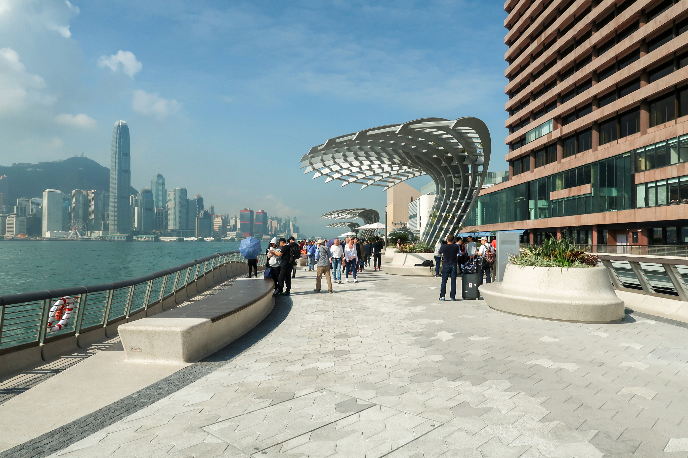

|  | In 1982, the New World Group built a promenade along the waterfront around the New World Centre in Tsim Sha Tsui East, Kowloon. In 2004,
the Group announced it would spend HK$40 million to build the Avenue of Stars, a project supported by the Hong Kong Tourism Board, [|Tourism Commission]],
the Leisure and Cultural Services Department of the Hong Kong Government and the Hong Kong Film Awards Association.
The avenue was opened to the general public on 28 April 2004 with an opening ceremony held the previous day, 27 April 2004.
The opening ceremony was presided over by a number of government and industry figures, including Henry Tang (Financial Secretary),
Stephen Ip (Secretary for Economic Development and Labour), Patrick Ho (Secretary of Home Affairs), Selina Chow (Chair of Hong Kong Tourism Board), Manfred Wong (Director/Actor),
and Cheng Yu-tung (Chair of New World Group); in which the privately funded avenue was handed over to the Hong Kong SAR government as public property.
At opening, the avenue honoured an initial 73 inductees elected by the Hong Kong Film Awards Association and the readers of City Entertainment.
(Source:https://en.wikipedia.org/wiki/Avenue_of_Stars,_Hong_Kong) « Previous Next » |